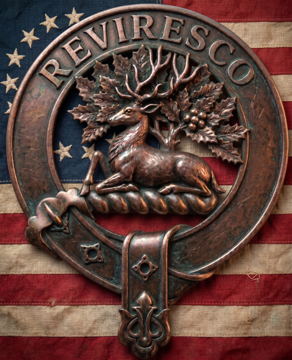
Maxwell Genealogy — American Line
Research Summary & Source Document Inventory · May 2026
FTDNA Kit 752085 · David B. Maxwell & James D. Maxwell
Research Summary
This page documents the American Maxwell line from Adam Maxwell (b. 1752, Cumberland Co., PA, per his sworn 1832 pension — an American-born ancestor, not the immigrant) who settled in Buffalo Township, Armstrong County, Pennsylvania, down through seven generations to the present. The immigrant ancestor is an unknown earlier figure, currently unidentified; the documented Scottish connection via the Auchincairn / Cowhill branch is established by Y-DNA but the genealogical bridge is broken (see Connection to the Scottish Line). The goal: confirm each father-to-son link with primary records rather than relying on the existing printed family chart (FT-1).
The chain is anchored at the top by Adam Maxwell's 1820 will in Armstrong County, which names his five sons; in the middle by an 1842 Orphans' Court petition (ORPH-1) naming David Maxwell's five minor children and fixing his death before 19 December 1842, and an 1849 release of estate confirming that David's widow Margaret had remarried his brother James Maxwell; and at the bottom by federal census records, Ohio death certificates, and Ohio county vital records.
The corrected chain runs through David Maxwell at generation 2 — FT-1's original identification, vindicated by the 1849 release after a brief detour through a William Maxwell hypothesis (see Dead Ends). The brother-marries-widow scenario was correct in structure but misapplied to the wrong brother: it was David → James, not William → James.
Proposed Ancestry Chain
| # | Person | Dates & Place | Status | Source |
|---|---|---|---|---|
| 1 | Adam Maxwell | b. 1752, Cumberland Co., PA (sworn 1832 pension) · d. 17 May 1837, Buffalo Twp., Armstrong Co., PA · m. Elizabeth · five sons (James, William, David, Adam, John) and three daughters (Elizabeth, Sarah, Margaret) | ✓ | WILL-A1 ⭐ · PEN-A1 ⭐ · PEN-A2 · CENS-1790 · CENS-1800 · CENS-1810 |
| 2 | David Maxwell | b. likely ~1795–1805, Armstrong Co., PA (son of Adam) · m. Margaret Huston in PA, ~1827–1832 · d. before 19 Dec 1842 (ORPH-1), Armstrong Co., PA · children: Sarah, Eliza Emily, Samuel Huston, Adam, James — all minors under 14 in Dec 1842 (ORPH-1) | ✓ | WILL-A1 · ORPH-1 ⭐ · REL-1 · FT-1 |
| 3 | Samuel Huston Maxwell | b. 23 Feb 1833, PA (likely Armstrong Co.) · raised by step-father James Maxwell after David's death · m. Mary E. Dinsmore 27 Aug 1860, Pike Co., OH · d. 25 Aug 1910, Columbus, OH · carpenter · buried Green Lawn Cemetery · middle name Huston = mother Margaret's maiden name (confirmed by DEATH-S1: "Margaret Hustone") | ✓ | REL-1 ⭐ · DEATH-S1 · MAR-1 · CENS-1860 · CENS-1900 · FT-1 |
| 4 | Mack Young Maxwell | b. 15 Jul 1864, Pike Co., OH · m. Lena Brohard · d. 8 Jun 1942, Marble Cliff, Franklin Co., OH · retired contractor | ✓ | DEATH-M1 ⭐ · CENS-1900 · CENS-1940 · FT-1 |
| 5 | Ralph Edgar Maxwell | b. 7 Jan 1887, Jackson Co., OH (Jun 1887 per 1900 census) · m. Jessie E. · d. 23 Jan 1942 · accountant (photo mounts industry) | ✓ | CENS-1900 · CENS-1940 · FT-1 |
| 6 | Ralph Davis Maxwell | b. ~1922–1923, OH (age 17 in April 1940 census; FT-1 said ~1925) · informant on grandfather Mack's 1942 death certificate | ✓ | CENS-1940 · DEATH-M1 · FT-1 |
| 7 | David B. Maxwell | FTDNA Kit 752085 | ✓ | FTDNA |
| 8 | James D. Maxwell | Son of David B. Maxwell | ✓ | — |
| 9 | Ralph Davis Maxwell & Charles Leo Maxwell | Sons of James D. Maxwell | ✓ | — |
Key Findings & Clarifications
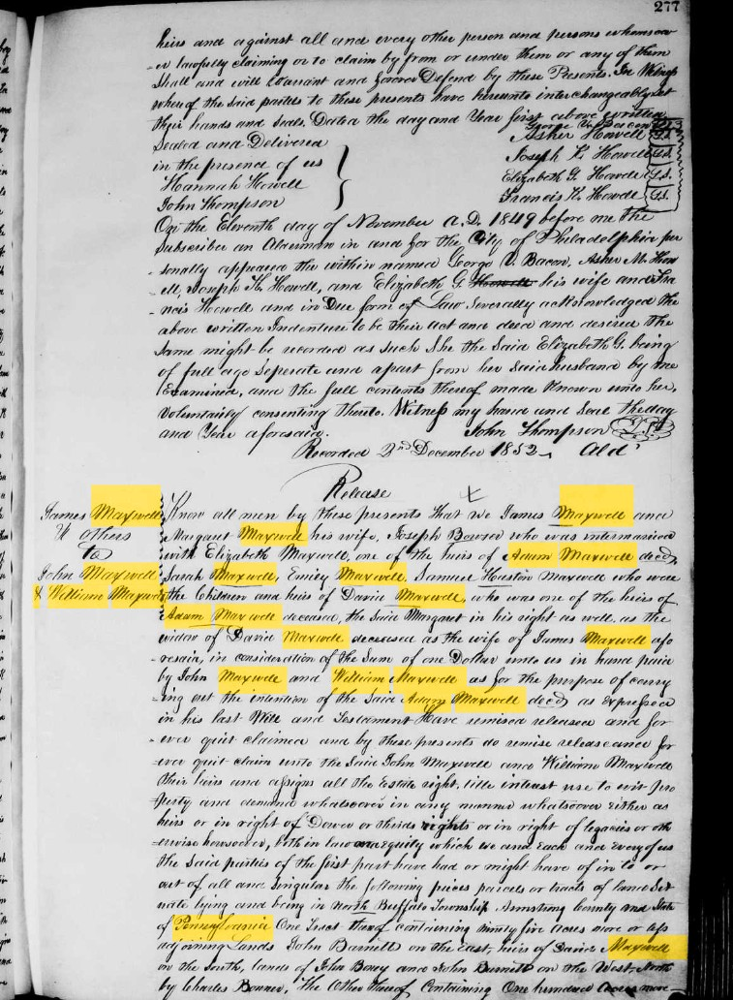
FT-1 was right: David Maxwell at generation 2 May 2026 reconfirmation
The printed family chart (FT-1) named generation 22 as David Maxwell, b. ~1798, d. 1830, Armstrong Co., PA. Adam Maxwell's 1820 will confirms David as one of Adam's five sons. The keystone 1849 estate release (REL-1) explicitly names Sarah, Emily, and Samuel Huston Maxwell as "the Children and heirs of David Maxwell" — settling the paternity question with a contemporary instrument signed by the family members themselves.
FT-1's death year of 1830 remains incorrect — David must have lived at least until 1833 to father Samuel — but the basic identification was right. The 1910 death certificate's contradictory naming of "William Maxwell" as Samuel's father (DEATH-S1) is best understood as informant error: Mack Y. Maxwell, born 1864, was supplying the name of a grandfather who had died decades before his own birth.
The brother-marries-widow scenario, confirmed David d. by Dec 1842 → James, by Nov 1849
Two records anchor the sequence. The 1842 Orphans' Court (ORPH-1; Armstrong Co., December Term 1842, No. 3) records the petition of "Margaret Maxwell, widow of David Maxwell late of Buffalo Tp … deceased," stating that David died leaving five children, all minors under fourteen — Sarah, Eliza Emily, Samuel [Huston], Adam, and James — with no one authorized over their persons and estates; the court appointed John Craig and William Huston guardians (bond filed 25 Jan 1843). This fixes David's death to before 19 December 1842 and names his children directly.
The 1849 release (REL-1) then describes "James Maxwell and Margaret Maxwell his wife … the Said Margaret in her right as well, as the widow of David Maxwell, deceased, as the wife of James Maxwell" — establishing that by November 1849 Margaret, David's widow, had married James Maxwell, David's brother (Adam's eldest son, named first in WILL-A1). The remarriage gave Margaret legal standing under both identities and shaped how Adam's estate was settled among the surviving heirs. It is the textbook nineteenth-century pattern: a brother taking on his deceased brother's widow and children, keeping property and family within the same patriline.
Sorting the blended household. Because David was dead by the end of 1842, his children are the five named in ORPH-1 (all born by 1842). Any children appearing later in the household who were born after 1842 — Addison (b. ~1852), and Harlow, Pauline, Robert, and William if their births post-date 1842 — are Margaret and James's joint children, not David's, and should be assigned by birth date. The composite family seen together in the 1860 Pike County census under James H. Maxwell thus combines David's five with James and Margaret's own issue.
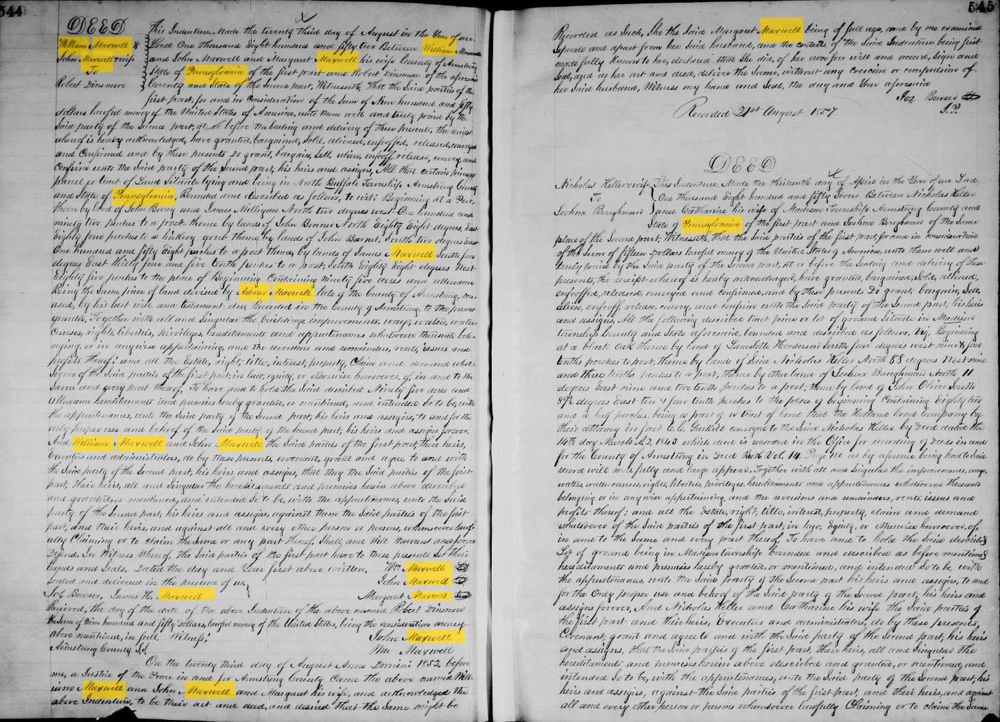
The Maxwell–Dinsmore connection is older than the Pike County marriage Armstrong Co., PA · 1852
The 1852 deed (DEED-1) shows William Maxwell and John Maxwell (with John's wife Margaret) of Armstrong County, Pennsylvania, selling North Buffalo Township land to Robert Dinsmore. Eight years later, Samuel Houston Maxwell will marry Mary E. Dinsmore in Pike County, Ohio (MAR-1).
The two families were neighbors in Armstrong County and conducted property transactions together in the early 1850s. Their joint migration to Pike County, Ohio — and the Maxwell-Dinsmore marriage there in 1860 — was not a coincidence between strangers, but a continuation of an existing PA relationship. The migration window aligned with David's death, Margaret's remarriage, and the broader settling of Adam's estate. The family network reorganized and moved west together.
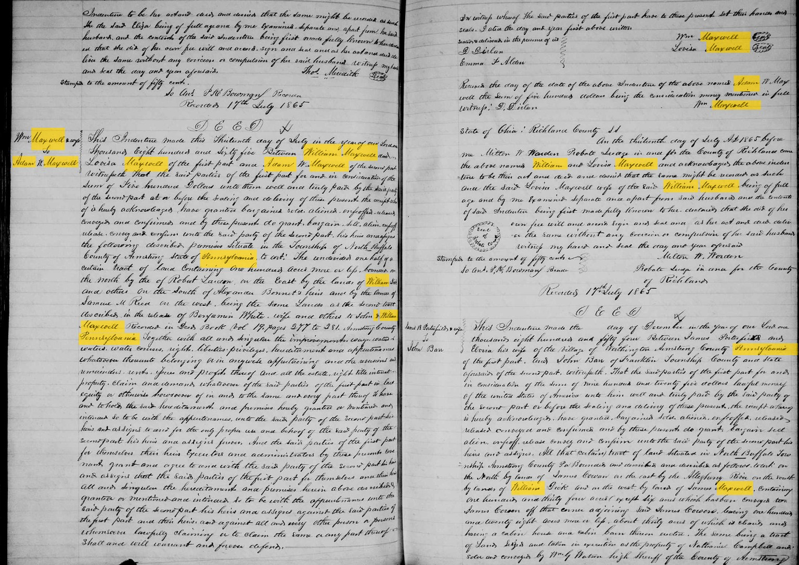
What happened to William, Adam's son Richland County, Ohio · 1865
The 1865 deed (DEED-2) shows William Maxwell, with wife Lovisa, of Richland County, Ohio, selling his inherited Armstrong County PA tract to his brother Adam W. Maxwell. William — Adam Sr.'s second son in WILL-A1 — survived his father by nearly thirty years and migrated north-central rather than south-central in Ohio. His presence in Richland County, alive and conducting business in 1865, is what definitively rules him out as Samuel's father (who died decades earlier as David). It also accounts in part for the likely source of Mack Y. Maxwell's confusion on the 1910 death certificate: William was the Maxwell uncle Samuel would have known of as living, while David, having died before Samuel's earliest memories, was the more easily forgotten paternal name.
Source Documents
Section 1 — Family Chart Records: The Starting Point

Ancestors of Ralph Davis Maxwell — Printed Chart ✓ Confirmed · ⭐ Key
File: 1000003677__1_.jpg · Printed family chart, provenance unknown · annotated copy held by David B. Maxwell
The printed chart that initiated this research. Records the American line from Adam Maxwell (listed as b. 1752, Cumberland Co., PA — a reading now vindicated as correct by Adam's 1832 sworn pension declaration; see PEN-A1) through five subsequent generations: David → Samuel H. Maxwell → Mack Young Maxwell → Ralph Edgar Maxwell → Ralph Davis Maxwell.
FT-1 was the hypothesis to be tested. The 2026 primary-source research confirmed its core structure — David Maxwell at generation 2, Samuel Houston as David's son, and the chain downward through Mack, Ralph Edgar, and Ralph Davis — while correcting several specific details.

Ancestors — Page 2 with Handwritten Annotations ✓ Confirmed
File: 1000003675.jpg · Dated 4/21/2010 · Annotated by David B. Maxwell
Handwritten annotations on the second page of the family chart. Records a claimed Scottish connection: "Parents: John Maxwell 15 May 1726 Stirling Stirlingshire Scotland married 17 May 1747 Stirling Scotland / Mary Finlayson 1727" — asserting that Adam Maxwell's parents were John Maxwell of Stirling and Mary Finlayson. This annotation is most plausibly the original source of the Stirling identification rather than independent confirmation of it: it records a family tradition committed to paper in 2010 that has since been disproved (see Dead Ends).
Also records Adam Maxwell's Revolutionary War service: Indian Spy, 2nd PA Militia, Morristown, NJ — evidence consistent with Adam's sworn pension declaration (PEN-A1).
Section 2 — 20th-Century Ohio: Federal Census & Death Certificates
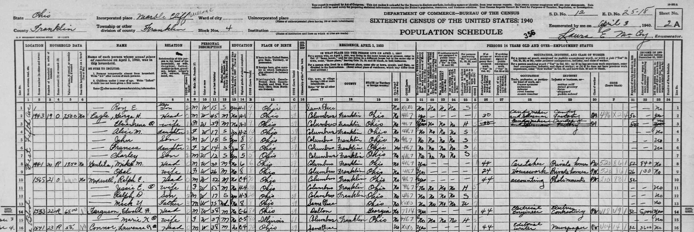
1940 Federal Census — Marble Cliff, Franklin Co., Ohio ✓ Confirmed · ⭐ Key
16th Census of the United States · Sheet 2A, ED 25-15 · Enumerated 3 April 1940 by Laura E. McCoy · West Fifth Avenue
Lines 10–13 record the Maxwell household at one address: Ralph E. Maxwell (head, age 52, accounting in photo mounts industry); Jessie E. (wife, age 55); Ralph D. (son, age 17); Mack Y. (father, age 75, widowed). All born in Ohio.
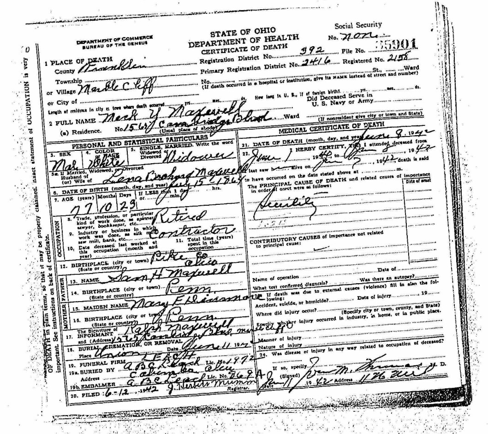
Mack Young Maxwell — Ohio Death Certificate, 8 June 1942 ✓ Confirmed · ⭐ Key
State of Ohio Department of Health · Certificate of Death · File No. 35901 · Registered No. 2158 · Registration District 2416 · Franklin Co. · Marble Cliff · 1567 Cambridge Blvd
Full name: Mack Y. Maxwell. Born 15 July 1864, Pike Co., Ohio (age 77y 10m 23d). Died 8 June 1942. Retired contractor. Widower of Lena Brohard Maxwell. Father: Sam H. Maxwell, b. Pennsylvania. Mother: Mary E. Dinsmore, b. Pennsylvania. Burial: Union Cemetery, 11 June 1942.
Informant: Ralph D. Maxwell, 1562 Cambridge Blvd — the deceased's grandson (generation 6).
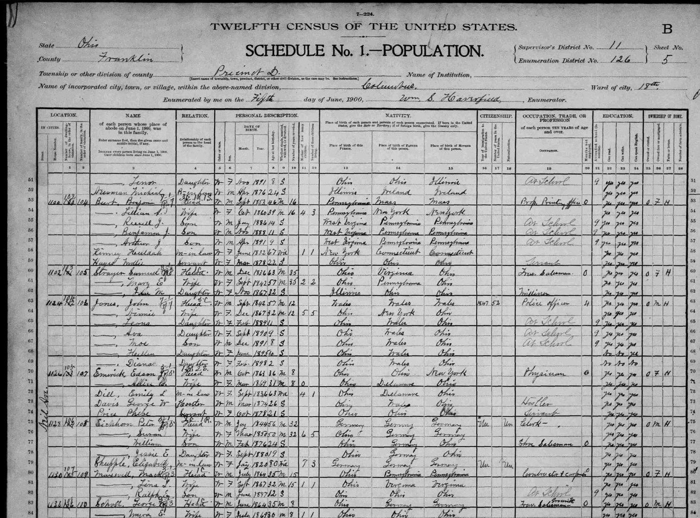
1900 Federal Census — Columbus, Franklin Co., Ohio ✓ Confirmed
12th Census of the United States · Schedule No. 1 · Ward 18, Precinct D, ED 126, SD 11 · Sheet 5B · Enumerated 5 June 1900 by Wm. S. Hassfield
Lines 80–82 (household 109): Maxwell, Mack Y. (head, b. July 1864, age 35, contractor & cooper, home owner; b. Ohio, parents b. Pennsylvania); Lena S. (wife, b. Sept 1867, age 32, m. 15 yrs, 1 child / 1 living; b. Ohio, parents b. Virginia); Ralph E. (son, b. June 1887, age 12; b. Ohio; at school).
Section 3 — 19th-Century Ohio: The Pike County Records
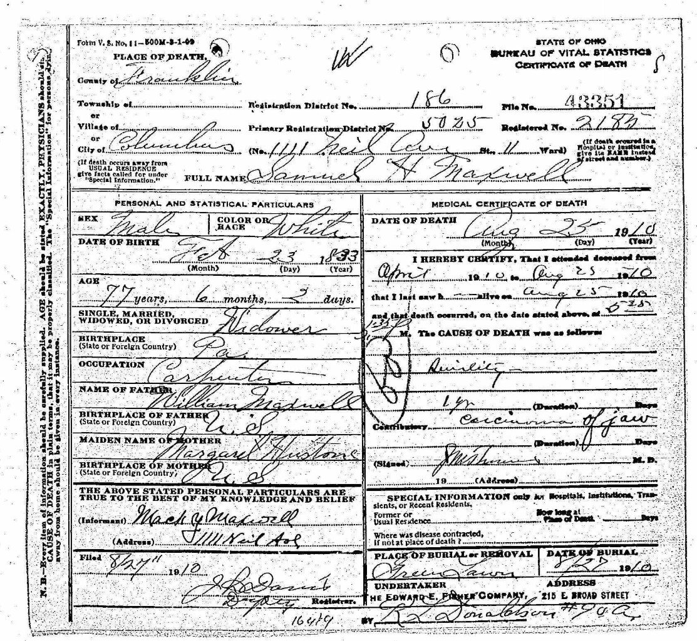
Samuel Huston Maxwell — Ohio Death Certificate, 25 August 1910 ✓ Confirmed (with one informant error)
State of Ohio Bureau of Vital Statistics · Certificate of Death · File No. 43351 · Registered No. 2184 · Franklin Co. · Columbus · 1111 Neil Avenue
Full name: Samuel H. Maxwell. Born 23 February 1833, Pennsylvania (age 77y 6m 2d). Died 25 August 1910. Carpenter. Widower. Cause of death: senility (1 year); contributory: carcinoma of jaw. Father: William Maxwell, b. U.S. [INFORMANT ERROR — see note below]. Mother's maiden name: Margaret Hustone, b. U.S. Burial: Green Lawn Cemetery, 27 August 1910.
Informant: Mack Y. Maxwell, 1111 Neil Ave (son of the deceased).
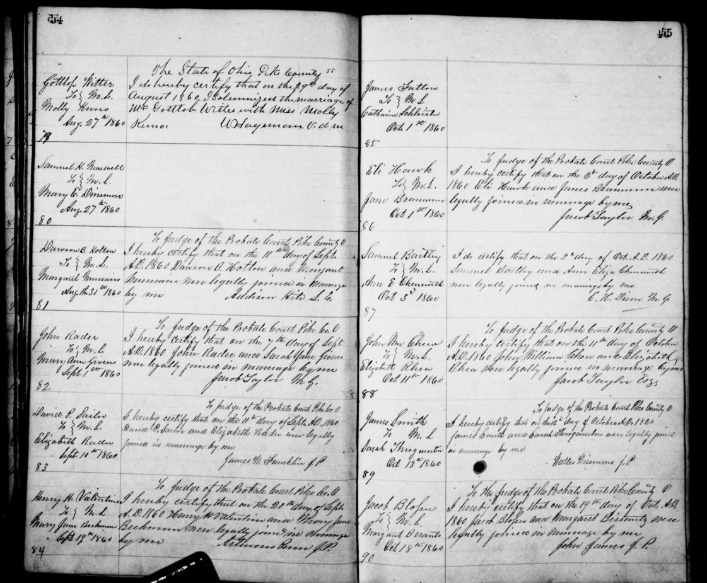
Samuel H. Maxwell & Mary E. Dinsmore — Marriage, 27 August 1860 ✓ Confirmed
Pike County, Ohio Marriage Records · p.155, entry No. 80 · Solemnized 27 August 1860
Record No. 80: "Samuel H. Maxwell to Mary E. Dinsmore · Aug. 27th 1860."
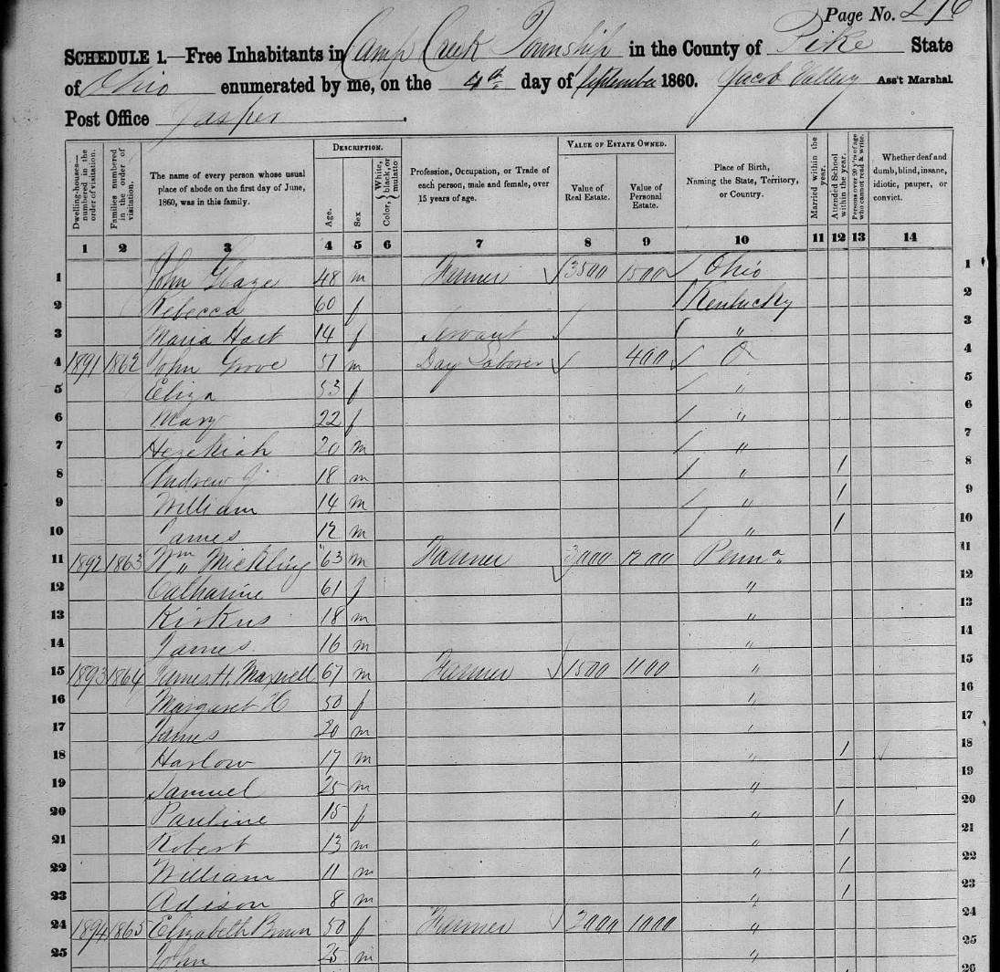
1860 Federal Census — Camp Creek Twp., Pike Co., Ohio ✓ Confirmed · ⭐ Key
Schedule 1, Free Inhabitants · Page 270 · Post Office: Jasper · Enumerated 4 September 1860 by Jacob Calley, Asst. Marshal
The combined Maxwell household, lines 15–23 (dwelling 1893, family 1864): James H. Maxwell (67, m, Farmer, $1,500 real / $1,100 personal, b. Penn.) — Samuel's step-father (and biological uncle, brother of David); Margaret H. (50, f, b. Penn.) — Samuel's mother, widow of David and now wife of James; James (20); Harlow (17); Samuel (25); Pauline (15); Robert (13); William (11); Addison (8). All children b. Penn.
Section 4 — 19th-Century Pennsylvania & Westward: Settling Adam's Estate
Release of Estate — James Maxwell, Margaret, Bowser, Sarah/Emily/Samuel Houston Maxwell ✓ Confirmed · ⭐ Key
Armstrong County, PA Deed Book Vol. 19, p.277 · Acknowledged 11 November 1849, Philadelphia · Recorded 2 December 1852
The keystone document for the corrected American line. Opens:
"Know all men by these presents That We James Maxwell and Margaret Maxwell his wife, Joseph Bowser who was intermarried with Elizabeth Maxwell, one of the heirs of Adam Maxwell deceased, Sarah Maxwell, Emily Maxwell, Samuel Huston Maxwell who were the Children and heirs of David Maxwell, who was one of the heirs of Adam Maxwell deceased, the Said Margaret in her right as well, as the widow of David Maxwell, deceased, as the wife of James Maxwell..."
Signed: James Maxwell, Margaret Maxwell, Eliza E. (Emily) Maxwell, Samuel Maxwell, Sarah Maxwell, Joseph Bowser.
William Maxwell & John Maxwell to Robert Dinsmore — Land Deed Armstrong Co., PA · 23 Aug 1852
Armstrong County, PA Deed Book Vol. 19, p.544 · Executed 23 August 1852 · Recorded 21 August 1857
"William Maxwell and John Maxwell and Margaret Maxwell his wife of the County of Armstrong State of Pennsylvania of the first part and Robert Dinsmore of the same county and State of the second part." The Maxwells are selling for $950 cash a tract in North Buffalo Township that had been "devised by Adam Maxwell late of the County of Armstrong, deceased, by his last will and testament." Signed: Wm Maxwell, John Maxwell, James H. Maxwell (as witness), Margaret Maxwell.
Heir Releases to John & William Maxwell Aug–Nov 1852
Armstrong County, PA Deed Book Vol. 19, multiple folios · 1852
A sequence of releases from Adam Maxwell's heirs, each transferring their remaining estate claims to John Maxwell and William Maxwell for the purpose of finally winding up Adam's estate fifteen years after his death. Includes:
- Benjamin White and wife Sarah (one of Adam's daughters, per WILL-A1) — of Coshocton Co., OH — release dated 11 October 1852, consideration $50
- Michael Winick and wife Eliza White (daughter of Margaret White, one of Adam's daughters), and Adam M. White — release dated 27 October 1852, consideration $1
- Mahlon White (child of Margaret White) — release dated 20 November 1852, consideration $4
Each release identifies the granters' relationships to Adam, locates the land in North Buffalo Township, Armstrong County, and adjoins "the heirs of David Maxwell, deceased" on the south boundary.
William Maxwell & Lovisa to Adam W. Maxwell — Land Deed Richland Co., OH · 13 July 1865
Armstrong County, PA Deed Book Vol. ___, p.___ · Recorded 17 July 1865 · Acknowledged before Probate Judge Milton W. Worden, Richland Co., OH
William Maxwell of Richland County, Ohio, with wife Lovisa Maxwell, sells his half-interest in a 100-acre tract in North Buffalo Township, Armstrong County, PA, to Adam W. Maxwell (almost certainly his brother Adam Jr., the fourth-named son in WILL-A1) for $500. The tract is described as "the same Lands as the second tract described in the release of Benjamin White wife and others to John & William Maxwell recorded in Deed Book Vol. 19, pages 277 to 281" — a direct cross-reference to REL-2.
Section 5 — Adam Maxwell: Life Records (1776–1837)
Adam Maxwell (b. 1752, Cumberland Co., PA, per his sworn 1832 pension; d. 17 May 1837, Buffalo Township, Armstrong County, PA) is the best-documented individual in the chain. The records below span from his pre-migration origins in Toboyne Township, Cumberland County (the 1776 and 1779 tax lists — his probable home community before moving west), through his Revolutionary War service, four consecutive federal censuses, his 1820 will, and his pension declaration and roll entry — together covering nearly six decades of his life in Pennsylvania.
Adam Maxwell — Life Movements, 1752–1837 ✓
Compiled from his 1832 pension declaration (which names his ranging posts on the Conemaugh and Loyalhanna), the 1779 Toboyne tax list, the 1783 Westmoreland transcript and 1790 census, and his 1820 will and 1837 death in Armstrong County.
The journey, in order
Markers are approximate; Blacklick sits at the mouth of Blacklick Creek on the Conemaugh near Blairsville, and William Watson's is placed on the Loyalhanna near Derry (its exact site is unidentified). His wartime ranging ground between the Conemaugh and the Loyalhanna is the very country he would later settle — Derry lies between the two. Solid line = permanent westward migration; dashed line = the temporary 1776–77 war-service excursion.
1776 Rate List — Toboyne Township, Cumberland Co. ✓
Cumberland County rate (tax) assessment, Toboyne Township, 1776 · pp. 250–253 (landholders and Freemen).
| Name | Class | Holdings / assessment |
|---|---|---|
| James Maxwell | Landowner | 60 acres + 30 ridge; 21 acres valued @ £5 p.c.; 1 horse, 1 cow, 2 sheep. The only Maxwell in the township. |
| Adam Maxwell | — | Absent — not a landholder and not on the Freemen list. |
| John Maxwell | — | Absent — neither landholder nor freeman. |
Land Warrant — James Maxwell, Toboyne Twp., 7 May 1787 ✓
Pennsylvania Archives, Third Series, Warrantees of Land … County of Cumberland, Warrant No. 685.
| Warrantee | James Maxwell |
| Quantity warranted | 200 acres (survey warrant) |
| Location | Toboyne Township, Cumberland Co. (later Perry Co., 1820) |
| Date of warrant | 7 May 1787 |
| Original survey | 7 Dec 1789 — 177 a. 65 p.; Samuel Lyon, D.S. (C135.233) |
| Resurvey | 16 Aug 1804 — 184 a. 12 p.; Wm Ramsey, D.S., on Board of Property order of 13 Apr 1803 (C135.232) |
| Survey returned / accepted | 18 June 1814 |
| Acres patented | 184 a. 12 p. |
| Patentee | James Maxwell |
| Recorded | Patent H.10.704 · survey C135.232–233 |
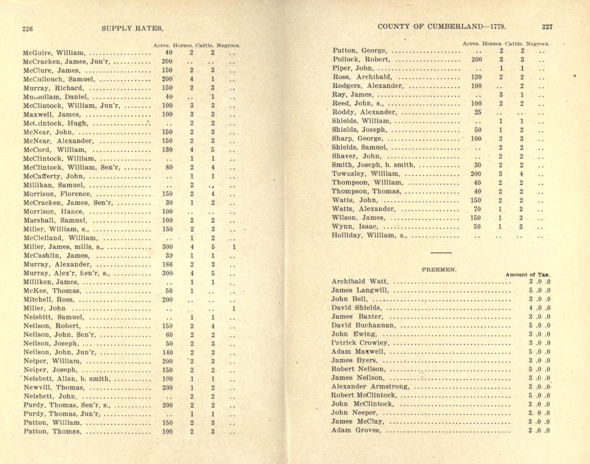
TAX-1 ⭐1779 Supply Tax — Toboyne Township, Cumberland Co. ✓ ⭐ Key
Pennsylvania Archives, Third Series, Vol. 20, State and Supply Transcripts of the County of Cumberland, 1778–1785, Toboyne Township, pp. 226–227.
| Name | Class | Holdings / assessment |
|---|---|---|
| Adam Maxwell | Freeman | Among the single freemen; assessed £5. Our line (probable — see ASSESS-1). |
| James Maxwell | Landowner | 100 acres, 3 horses, 3 cattle. Candidate father — see ASSESS-1. |
1783 Transcript of Property — Westmoreland Co. (two Adam Maxwells) ✓
Pennsylvania Archives, Third Series, Vol. 22, Transcript of Property, County of Westmoreland — 1783: Derry Township, p. 396; Mount Pleasant Township, p. 435.
| Name | Township | Assessment | Status |
|---|---|---|---|
| Maxwell, Adam | Derry | 200 acres; no horses, cattle, or sheep | landholder |
| Maxwell, Adam | Mount Pleasant | no land; 1 horse | single (freeman) |
| Maxwell, Wm. | Mount Pleasant | no land; 1 horse | single (listed immediately below Adam) |
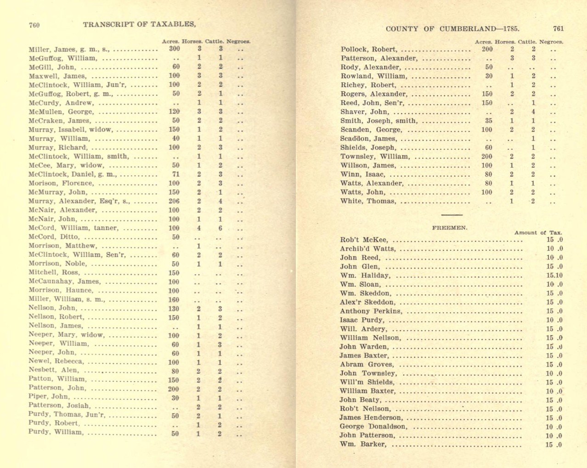
TAX-21785 Transcript of Taxables — Cumberland Co. ✓
Pennsylvania Archives, printed Transcript of Taxables, County of Cumberland — 1785, pp. 760–761 (landholders and Freemen).
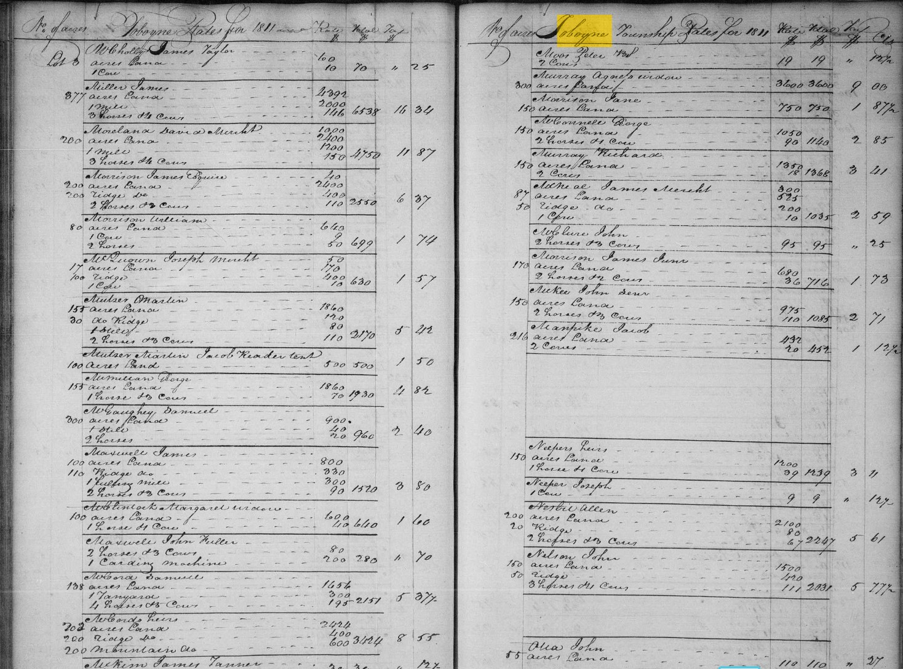
TAX-31811 Rate List — Toboyne Township, Cumberland Co. ✓
Cumberland County rate assessment, Toboyne Township, 1811.
| Name | Holdings | Valuation |
|---|---|---|
| Maxwell, James | 100 a. land · 110 a. ridge · 1 fulling mill · 2 horses, 3 cows | £1,520 (tax $3.80) |
| Maxwell, John (fuller) | 2 horses, 3 cows · 1 carding machine | £280 |
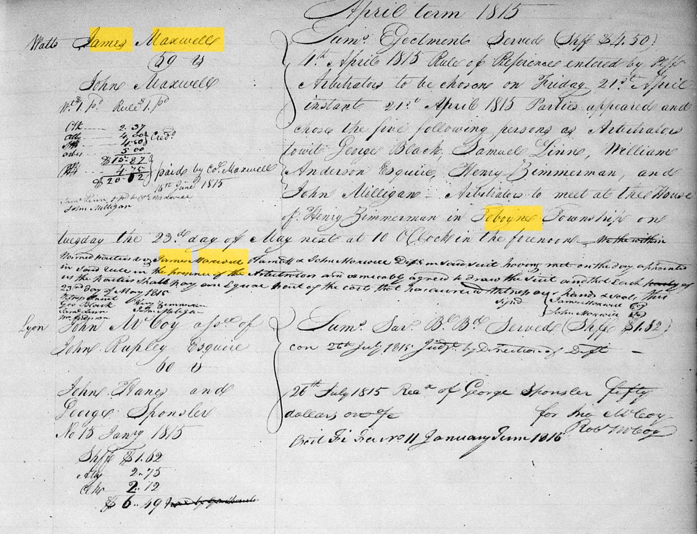
EJECT-11815 Ejectment — James Maxwell v. John Maxwell, Cumberland Co. C.P. ✓
Cumberland County Court of Common Pleas, April Term 1815, No. 59 (Summons in Ejectment) · attorney "Watts."
James Maxwell (plaintiff) sued John Maxwell (defendant) in ejectment — a dispute over possession/title to land. A rule of reference was entered 1 April 1815; arbitrators were chosen 21 April — George Black, Samuel Linn, William Anderson Esq., Henry Zimmerman, John Milligan — to meet at Henry Zimmerman's house in Toboyne Township on 23 May. The parties then "amicably agreed to draw [withdraw] the suit," each to pay one equal half of the costs. The bill (~$20.62) was "paid by Col. Maxwell, 16 June 1815." Both James and John signed the agreement.
1840/41 Johnston Deed — reciting the Maxwell v. Brown judgment ✓
Deed dated 4 Oct 1840, acknowledged 12 Dec 1840, entered 7 Apr 1841 (Perry Co. Deed Book, p. 368) · Executors of James Johnston dec'd (George Johnston & Wm. B. Anderson) to John Johnston · $1,000.
James Maxwell appears only in the deed's recital of an earlier sheriff's sale. Years before, "James Maxwell and Nancy his wife, late Nancy Brown" recovered a judgment in Cumberland County Common Pleas against George Brown (surviving co-partner of William Brown) — $157.27 debt plus $31.21 damages. A testatum fieri facias (tested 1822) directed the Sheriff of Perry County to levy on Brown's land; the sheriff seized a 150-acre tract in Toboyne Township, bounded by lands of Mathias Plump and Jacob Collar; an alias venditioni exponas (tested 19 Apr 1825) led to a sheriff's sale on 4 Aug 1825 to James Johnston of Toboyne. The 1840/41 deed is Johnston's executors conveying that tract onward to John Johnston.
History of Perry County, PA — James & Col. John Maxwell ✓ ⭐
H. H. Hain, History of Perry County, Pennsylvania (1922), pp. 994 and 996–997 (Madison/Toboyne townships).
p. 994: "The farm south of Centre post office was warranted in May, 1787, by James Maxwell. It contained 200 acres, and there was a 'fulling mill and power mill' erected there. In 1835 it had passed to Joseph Eaton" (assessed with a fulling mill, carding machine and still). A separate early-warrant list on the same page also includes James Maxwell.
pp. 996–997 (Bistline mill): the same tract — "warranted by James Maxwell, May 7, 1787, originally 200 acres." Then: "Col. John Maxwell, who was county commissioner in 1824, and was a son of John Maxwell, was assessed with 'a fulling mill and a power mill' in 1820" when the county was formed; the 1835 assessment lists a fulling mill, carding machine and still; "from his heirs, in 1873, it was conveyed to Abraham Bistline."
Is the Toboyne Adam our Adam? ● Probable — not proven
Two linked claims must be kept apart: (1) identity — that the Adam Maxwell among the 1779 Toboyne freemen is our Adam (the 1832 Armstrong County pensioner, b. 1752 Cumberland Co., d. 1837); and (2) parentage — that James Maxwell of Toboyne is his father. Parentage depends on identity: if the Toboyne Adam is a different man, James-as-father falls with him. The identity is therefore the load-bearing claim.
| Factor | Weight | What it shows |
|---|---|---|
| Birth county | Strong | Adam swore (1832) he was born in Cumberland Co., 1752. The Toboyne Adam is a Cumberland man — the county Adam himself named under oath. |
| Age / life-stage | Strong | Born 1752 → ~27 in 1779, unmarried and unlanded; a freeman is exactly that status. Precise fit. |
| Migration timing | Strong | Toboyne Adam present 1779, gone by 1782; our Adam in Westmoreland by 1790 (CENS-1790). The departure window matches the westward move. |
| FAN network | Strongest | Toboyne holds three families from Adam's later documented life — Shields (Capt. John Shields, his militia commander per PEN-A2), Reed (later at Slate Lick), Kincaid (his Derry land) — across war, church, and land dealings. A coincidental second Adam Maxwell would have to share Adam's entire social network. |
- No document equates the Toboyne Adam with the Armstrong Adam; the link is wholly circumstantial.
- "Adam Maxwell" is not a unique name; a second Adam in Cumberland County cannot be formally excluded (though the FAN overlap makes one unlikely).
- Adam's pension has him "living in Westmoreland when called into service" (1776–77) while the tax places him in Cumberland in 1779 — reconcilable as wartime shuttling, but a reconciliation, not a confirmation.
- The tax entry carries nothing individuating — no age, no kin, no "son of James."
(1) Identity — that the Toboyne freeman Adam of 1779 is our Adam — remains ● probable, resting on the FAN convergence (Shields, Reed, Kincaid), the Cumberland birth, the age/life-stage fit, and the matching departure window. This is categorically firmer than the discarded Stirling identification.
(2) Parentage — that James Maxwell was Adam's father — is ● probable but unproven, and the newer records (TAX-0, TAX-2, TAX-3, EJECT-1, HIST-1) reshape the picture. They establish James as the senior Toboyne patriarch (sole Maxwell 1776 and 1785) and the Johns as the next generation (a John "fuller" by 1811; Col. John, "son of John," holding the mill by 1820 and commissioner in 1824). The most economical model is now a James-headed family with John-branch heirs: James (warrant + mill) → his son John → Col. John → heirs → Bistline 1873. The 1815 James v. John ejectment fits as an intra-family title dispute as the estate passed down.
The honest weak point: Adam appears in Toboyne only in 1779 — absent 1776, absent 1785 — and never holds land or inherits there; the mill descends entirely through the John branch. That single, bracketed appearance is consistent with Adam being an elder son who left for Westmoreland (~1780–82) before any land descended to him (the favorable reading) but is equally consistent with a transient nephew/cousin who belonged to a different household. The new records do not decide between these. They do, however, restore James to a senior, patriarchal position — which is more favorable to the father hypothesis than a contemporaries reading would be.
- James Maxwell's own will / estate — now the single most valuable target. If James is the patriarch, his will names his children: it will either list "son Adam … of Westmoreland/Armstrong Co." (proof of parentage) or enumerate only the John branch and omit Adam (strong evidence Adam belonged to a different household). The 1787→1814 warrant-to-survey gap and his 1811/1815 activity suggest James lived into the 1810s–1820s — look in Perry County wills/administrations ~1815–1830 (Cumberland Co. if he died before 1820).
- The James → John descent. Establish whether the elder John (Col. John's father) was James's son via a Perry deed/will or the 1873 Bistline conveyance "from [Col. John's] heirs", which should name the heirs and show whether any Adam-branch claim ever existed.
- The 1815 ejectment file (James v. John, No. 59, April 1815) — pleadings may recite the chain of title and the source of each party's claim, potentially naming James's children.
- A direct bridge document: a church transfer certificate (Toboyne-area congregation → Westmoreland); a militia muster placing Adam in a Cumberland company; a deed linking his Westmoreland land to a Toboyne transaction.
- Westmoreland land/church records for Adam, ~1780–1790 — whether he arrived propertied (suggesting an inheritance from a father) or started from nothing.
- Ruling out a second Adam Maxwell via the Pennsylvania Archives Third Series general index (Vol. 29, K–Ref).
- Y-DNA from a documented descendant of the John branch (Col. John's line), tested against Kit 752085.
Record images: 1776 list · 1779 supply tax · 1782 list · 1785 transcript · 1787 warrant · 1811 list · 1815 ejectment · Perry Co. history
Assessment — Which Westmoreland Adam Maxwell is ours? ● Probable
Evidence: the 1790 Federal Census for all of Westmoreland County (USGenWeb Archives index, M–R surnames, abstracted by Lynn Beatty), read against TAX-W1 (1783), TAX-W2 (1786), and CENS-1790.
The complete county index shows only three Maxwell households in 1790: Adam (Derry), "Arobeat" / Robert (Hempfield), and William (Unity). There is exactly one Adam Maxwell in the entire county, and he is the Derry man.
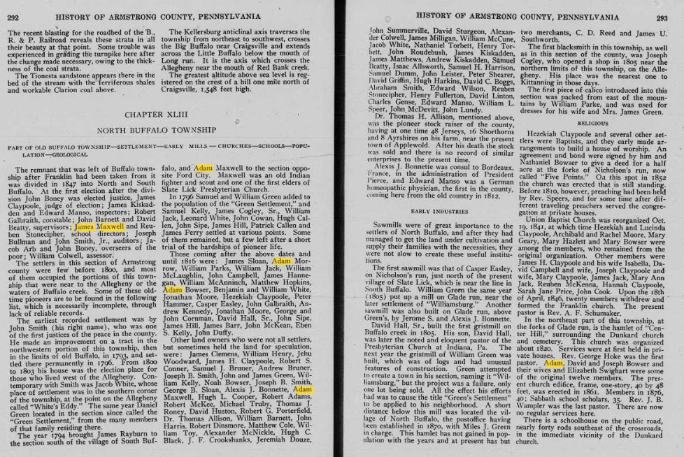
County-history corroboration: spy, Slate Lick elder, and a 386-acre tract Smith, Hist. Armstrong Co. (1883), N. Buffalo Twp
Robert Walter Smith's History of Armstrong County, Pennsylvania (Chicago: Waterman, Watkins & Co., 1883), in its North Buffalo Township chapter, records that Maxwell settled the section along the Allegheny opposite Ford City about 1794–96, and that he "was an old Indian fighter and scout and one of the first elders of Slate Lick Presbyterian Church." Both checkable claims corroborate our Adam from a source independent of his 1832 pension: the scout/spy service matches his sworn Indian-Spy duty, and the Slate Lick eldership matches the church record.
The same chapter carries more, in its land and road-petition sections: the Adam Maxwell tract of 386 acres 70 perches, bounded by the Holland–Barnett, Kelly–Campbell, Morrow–Green, Daniel Green–Ross–Boney, and William Jack tracts; his assessment on that land in 1805 ($318) and 1806 ($258); his service as township supervisor several times; and — most valuable — his own affidavit on the proposed Freeport-to-Kittanning road, in which Adam states he "was appointed a spy by the State in the last Indian wars," his "route…from the mouth of Buffalo to the mouth of Limestone on the Allegheny river." That affidavit is a second, independent self-attestation of his spy service, in a different document and decade from the pension. (These details are from elsewhere in the same chapter, relayed via a secondary transcription — confirm wording and page against the original.)
The chapter also sets Adam among a settler community thick with his known associates — James Barr (who, per the pension, selected him as a spy in 1776), David Huston (the probable family of daughter-in-law Margaret), William Barnett and Robert McKee (1779 Toboyne surnames), Samuel Beatty, Jonathan Moore, and Robert Dinsmore — the Cumberland-and-frontier network reassembling in Armstrong.
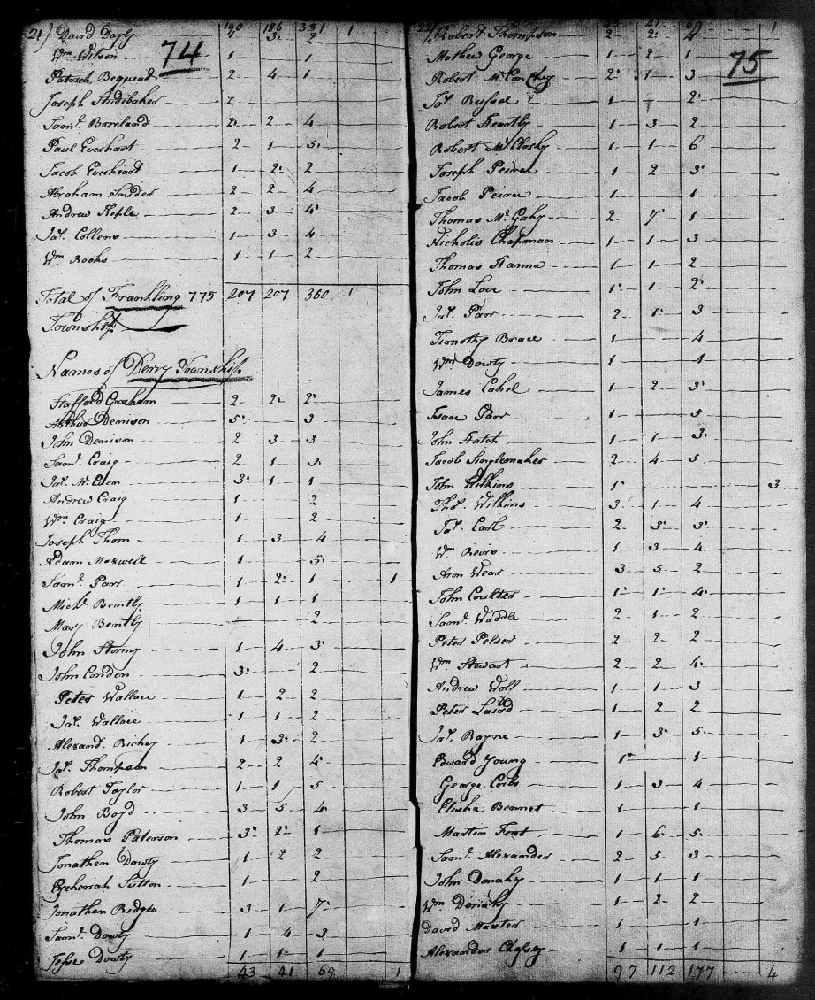
1790 Federal Census — Derry Township, Westmoreland County, Pennsylvania ✓ Confirmed
First Census of the United States · Derry Township, Westmoreland County, PA · "Adam Maxwel" · household of 1 free white male (the head), 0 free white males under 16, and 5 free white females (6 total)
An entry reading "Adam Maxwel" appears in the Derry Township section of the 1790 Westmoreland County census. The household comprises 1 free white male 16 and over (the head), no free white males under 16, and 5 free white females — six persons in all. Armstrong County did not yet exist in 1790 — it was carved out of Westmoreland, Allegheny, and Lycoming counties in 1800 — so any pre-1800 record of Adam must be sought in Westmoreland County.
The household profile is consistent with what we know of Adam's family. By 1790 he would have been approximately 38 years old (b. 1752, Cumberland Co., PA, per his sworn 1832 pension). The household contains no males under 16, consistent with Adam's sons (James, William, David, Adam Jr., John) all being born after 1790 — James, the eldest, ~1793 (see WILL-A1). The five females fit a wife and several daughters in a family whose sons had not yet arrived: a daughters-first household, not an established one with grown sons.
Crucially, Adam's own pension declaration (PEN-A1) states that he was living in Westmoreland County when he volunteered for militia service in 1776–77, and John Craig's supporting affidavit confirms that Adam and his brother Alexander Craig "marched from Westmoreland County in the year 1777." Derry Township, Westmoreland County is therefore exactly where we would expect to find Adam in 1790 — still in his pre-Armstrong County home before the county reorganization of 1800 prompted the westward shift to Buffalo Township.
A full index of the 1790 census of Westmoreland Co. shows no other Adam Maxwells.
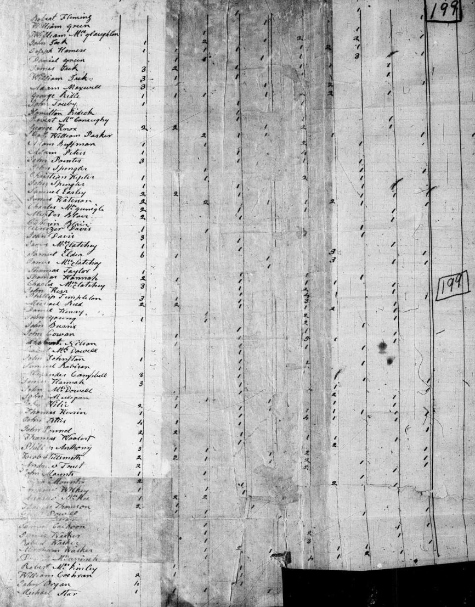
1800 Federal Census — Buffalo Township, Armstrong County, Pennsylvania ✓ Confirmed
Second Census of the United States · Buffalo Township, Armstrong County, PA · "Adam Maxwell" · page 199
An entry reading "Adam Maxwell" appears on page 199, cataloged as Buffalo Township, Armstrong County, Pennsylvania — the identical township named in his 1820 will (WILL-A1) and his 1832 pension declaration (PEN-A1). Armstrong County had only just been created in March 1800, carved out of Westmoreland, Allegheny, and Lycoming counties, so this census — taken later that same year — is the very first federal enumeration in which Adam could appear as an Armstrong County resident. The household includes Adam (1 male in the appropriate age column), wife Elizabeth (1 female), and several children; 3 males under 10 (consistent with younger sons Adam Jr. and John born in the 1790s) and 2 females between 10 and 16.
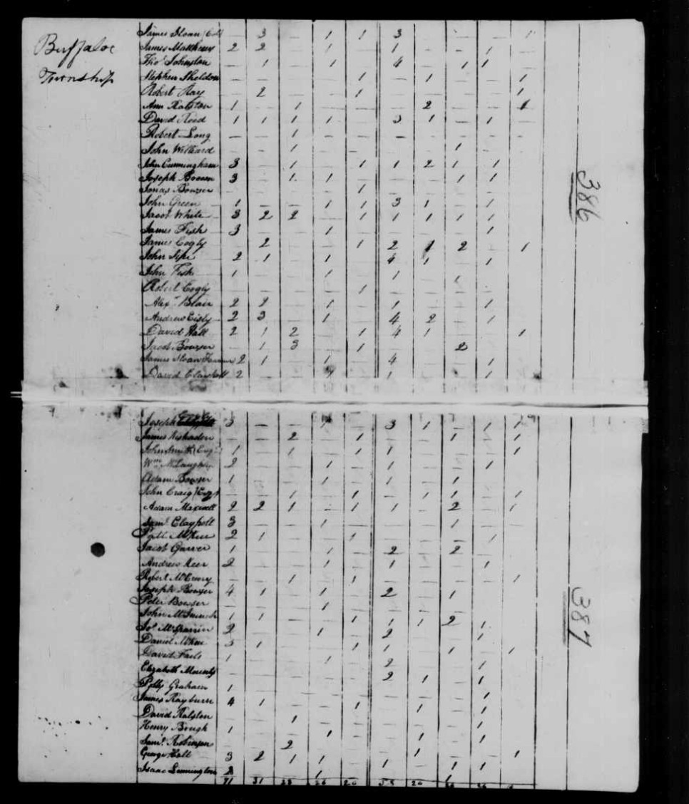
1810 Federal Census — Buffaloe Township, Armstrong County, Pennsylvania ✓ Confirmed
Third Census of the United States · Buffaloe Township, Armstrong County, PA · "Adam Maxwell" · lower section, page 387 · between "John Craig Esq." and "Saml. Claypoolt"
Adam Maxwell appears in the lower section of this two-page spread, clearly labeled "Buffaloe Township" at top left. He falls between John Craig Esq. and Samuel Claypoolt — Craig being the same neighbor who would stand as Adam's corroborating witness in the 1832 pension declaration (PEN-A1), here enumerated immediately above Adam on the same page. The two families were evidently long-standing Buffalo Township neighbors.
The 1810 census uses five age brackets for each sex. Adam, aged 60–61 in 1810, falls in the 45+ male column as the single older male head. Additional males in younger columns represent sons still at home — by 1810 the older sons James, William, and David (adult executors by 1820) would be in their teens or early twenties, while younger sons Adam Jr. and John were still boys. Wife Elizabeth appears in the female columns.
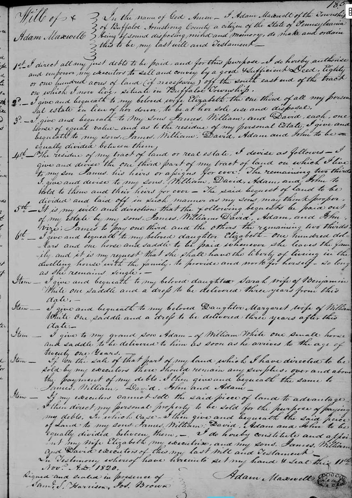
Adam Maxwell — Last Will and Testament · Buffalo Twp., Armstrong Co., PA ✓ Confirmed · ⭐ Key
Signed 11 November 1820 · Probated 1837 · Armstrong County Will Book, p.185 · Recorded immediately after John Eakman's 1837 will (p.184); Adam's death confirmed as 17 May 1837 by the Treasury Second Comptroller's statement (see PEN-A2)
Opening: "In the name of God Amen. I Adam Maxwell of the Township of Buffalo, Armstrong County, a citizen of the State of Pennsylvania, being of sound disposing mind and memory, do make and ordain this to be my last will and Testament."
The family in 1820: Wife Elizabeth (one-third of personal estate in lieu of dower); Sons James, William, David, Adam, John (James receives one-third of the real estate on which Adam lives, the others share the remaining two-thirds; James also assessed one-third of the legacies); Daughters Elizabeth (unmarried; $100 and a horse and saddle when she leaves the family), Sarah (wife of Benjamin White), Margaret (wife of William White); Grandson Adam, son of William White and Margaret. Executors: wife Elizabeth, and sons James, William, and David. Witnesses: Saml. S. Harrison, Jos. Brown.
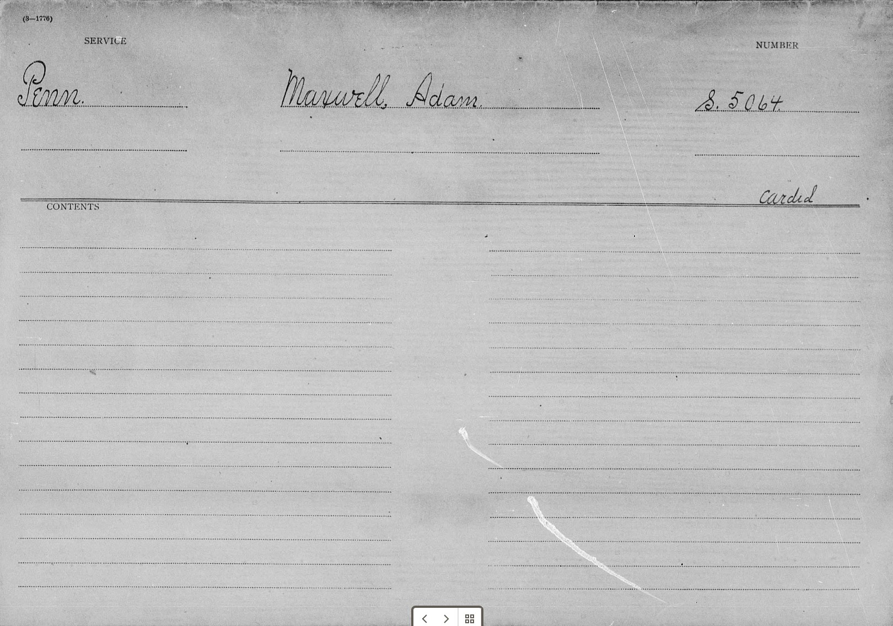
Adam Maxwell — Pension Declaration, Court of Common Pleas, Armstrong County, PA ✓ Confirmed · ⭐ Key
Case No. 11221 · Sworn 19 September 1832 · Court of Common Pleas, Armstrong County, Pennsylvania · Pension Act of June 7, 1832 · Signed: Adam Maxwell (his mark) · Witness: John Craig of Buffalo Township
On 19 September 1832, Adam Maxwell — then aged eighty and a resident of Buffalo Township, Armstrong County — appeared before the Court of Common Pleas to swear his pension declaration under the Act of Congress of June 7, 1832. In the declaration Adam states he was born in 1752 in Cumberland County, Pennsylvania, adding that he had "no record of my age but was informed of it by my parents" — a first-person sworn statement under oath, and the authoritative evidence for his birth. He then describes two distinct periods of Revolutionary War service.
First service — New Jersey militia, fall 1776 or 1777. Adam volunteered under Captain John Proctor (colonel: Pomeroy; major: Alexander Barr; first lieutenant: James Moore; Adam himself second lieutenant) while living in Westmoreland County, Pennsylvania. The regiment marched to Woodbridge, New Jersey, which served as their headquarters, with the British quartered at Amboy or Brunswick about three miles distant and General Washington's headquarters at Morristown. During their six-month tour they conducted repeated skirmishes around Woodbridge, preventing British troops from plundering the local farms. On one occasion the British advanced in force, driving the militia back to Ash Swamp, where they were reinforced by "General Maxwell" (almost certainly Brigadier General William Maxwell, the New Jersey Continental commander known as "Scotch Willie") and fought a successful rearguard action that compelled the British to retreat. After the six months expired the regiment marched to Washington's headquarters, was directed to Philadelphia for their pay, and was discharged by their colonel. Adam then returned to Westmoreland County. His commission as lieutenant and his discharge papers had been lost or destroyed, as he had taken no particular care of them.
Second service — Indian Spy, 1776. Adam was selected by General Charles Campbell and James Barr from the militia ranks to serve as an Indian Spy. His party included Captain Joseph Eagers, Benjamin Leisure, John Leisure, Captain Jeremiah Lochry, John Cooper, and himself. Their route ran via Blacklicks on the Conemaugh and William Watson's on the Loyalhanna, exchanging intelligence about Indian movements with other spy parties along the way — intelligence that was then published to the inhabitants. He served several months in this capacity. [Officer names and route per the pension document text; independent transcription from the thumbnail images in this repo was not achievable at the available resolution — owner should verify against the full-size originals before publishing.]
Corroboration by John Craig. John Craig of Buffalo Township, Armstrong County, aged eighty, swore a supporting affidavit: he well knew Adam Maxwell, believed him to be of the stated age, recollected that Adam was a volunteer and lieutenant as claimed, and confirmed that his own brother Alexander Craig had served in the same regiment. Craig testified that Adam and Alexander marched together from Westmoreland County in 1777 to join Washington's army in New Jersey, departed in the fall, and returned the following spring. He had often heard his brother Alexander say that Adam Maxwell was at the Battle of Ash Swamp with him. Craig also affirmed his belief that Adam's Indian Spy service was true.
Explorations — Collateral Maxwell Lines
These records document Maxwell men who are not on the direct line to Adam but surfaced in the Pennsylvania patent index and are worth logging — as distinct individuals to keep apart from James of Toboyne, as Y-DNA comparison candidates for Kit 752085, and as tests of alternative parentage hypotheses. Each is badged for what it is; none displaces the Toboyne candidacy for Adam's father.
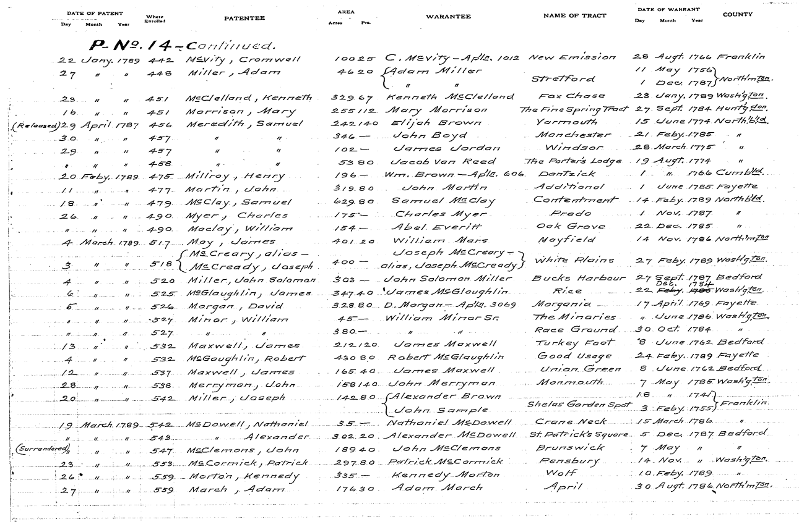
EXPL-A1Southwestern cluster — James Maxwell of Turkeyfoot, Bedford Co. (warrants 1762) ● Collateral / Y-DNA candidate
Pennsylvania Patent Index, P-Series, Patent Book P-14, pp. 532 & 537 (patents enrolled March 1789).
| Tract | Acres | Warrantee | Warrant date | County |
|---|---|---|---|---|
| Turkey Foot | 212 a. 120 p. | James Maxwell | 8 June 1762 | Bedford |
| Union Green | 165 a. 40 p. | James Maxwell | 8 June 1762 | Bedford |
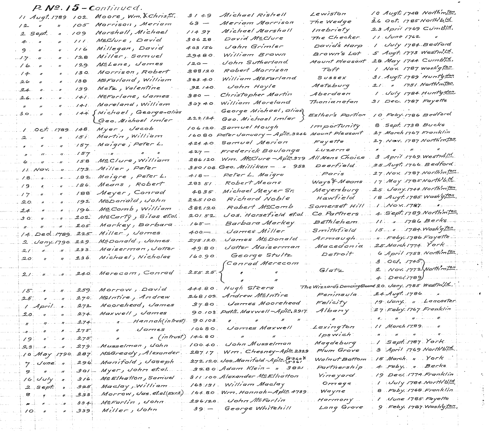
EXPL-A2Peters/Patrick thread — Patrick Maxwell's land patented in trust, Franklin Co. (1790) ● Likely closes Patrick-as-father
Pennsylvania Patent Index, P-Series, Patent Book P-15, pp. 274–275 (patents enrolled April 1790).
| Tract | Acres | Patentee | Warrantee | Warrant date |
|---|---|---|---|---|
| Albany | 90 a. 103 p. | James Maxwell & Hannah Maxwell (in trust) | Patrick Maxwell (Appl. 2917) | 27 Feb 1767 |
| Lexington | 106 a. 80 p. | James Maxwell | James Maxwell | 11 March 1789 |
| Ipswich | 144 a. 80 p. | James Maxwell (in trust) | James Maxwell | (per ditto — confirm) |
All in Franklin County (the Peters/Montgomery Township area). This is almost certainly the patent half of the "Hannah Maxwell et al. in trust" warrant-register entry (Montgomery Twp., 1790) previously flagged as the key test of the Patrick line.
Immigrant-generation candidate — William Maxwell, Lancaster Co. (warrants 1743 & 1747) ● Peters-progenitor / Y-DNA candidate — unplaced
Pennsylvania Patent Index, A-Series: Patent Book A-12, p. 208 (patent 10 April 1745) & Patent Book A-15, p. 513 (patent 11 October 1748).
| Acres | Warrant date | Patent date | Patent Book | County |
|---|---|---|---|---|
| 433 | 31 March 1743 | 10 April 1745 | A-12, p. 208 | Lancaster |
| 300 | 9 April 1747 | 11 October 1748 | A-15, p. 513 | Lancaster |
Immigrant-generation candidate — James Maxwell, 250 a., York Co. (warrant 1744) ● Y-DNA candidate — unplaced
Pennsylvania Patent Index, A-Series, Patent Book A-15, p. 635 (warrant 18 Aug 1744; patent 20 May 1751).
| Patentee / warrantee | James Maxwell |
| Acres | 250 (no tract name entered) |
| Date of warrant | 18 August 1744 |
| Date of patent | 20 May 1751 |
| County | York |
Dead Ends & Superseded Hypotheses
Genealogical research is iterative. Two superseded hypotheses are documented here so that future researchers can see the reasoning trail and avoid retreading either dead end.
✗ William Maxwell as Samuel's Father superseded May 2026
The hypothesis: Samuel Huston Maxwell's father was William Maxwell — Adam's son, brother of James — based on the 1910 death certificate (DEATH-S1) naming William as Samuel's father. Under this reading, William would have died between ~1852 and 1860, after which his widow Margaret remarried his brother James.
The disproof: Two independent contemporary documents make the William reading impossible:
- REL-1 (1849) explicitly names "Sarah Maxwell, Emily Maxwell, Samuel Huston Maxwell who were the Children and heirs of David Maxwell" — not William.
- DEED-2 (1865) shows William Maxwell alive and conducting business in Richland County, Ohio — therefore not the deceased Maxwell father of any timeline before 1865.
The lesson: Death certificate parental information is reliable for the deceased's spouse and immediate family but unreliable for grandparents who died before the informant's lifetime. Mack Y. Maxwell, born 1864, never met his biological grandfather David (deceased before 1849) and supplied the name of an uncle (William, of Richland Co., OH) instead. The error is representative of a wider class of informant unreliability on grandparental information, and should be treated as a documented case study, not a special anomaly.

{kind=link}
{kind=link}
{kind=link}
{kind=link}
{kind=link}
{kind=link}
{kind=link}
{kind=link}
{kind=link}
{kind=link}
{kind=link}
{kind=link}
{kind=link}
{kind=link}
{kind=link}
{kind=link}
{kind=link}
{kind=link}
{kind=link}
{kind=link}
{kind=link}
{kind=link}
{kind=link}
{kind=link}
{kind=link}
{kind=link}
{kind=link}
{kind=link}
{kind=link}
{kind=link}
{kind=link}
✗ Adam Maxwell = Stirling 1749 baptism / immigrant ancestor superseded June 2026
The hypothesis: Adam Maxwell (generation 1) was the child baptised on 20 August 1749 in the Stirling Associate Congregation as son of John Maxwell and Mary Finlayson (OPR-B0 / CH3/559/17), and was therefore the Scottish immigrant who settled in Pennsylvania. Under this reading, FT-1's "b. 1752, Cumberland Co., PA" was a family-tradition error corrected by the Scottish OPR record, and FT-2's 2010 annotation naming John Maxwell (b. 1726 Stirling) and Mary Finlayson as Adam's parents was independent confirmation.
The disproof: Two independent primary sources make the identification impossible:
- Stirling OPR Deaths 1750 records the burial of "Adam Maxwell, son to John Maxwell, hammerman, burgess, buried at the foot of Deacon Finlayson's throughstone" on 5 December 1750. The Stirling child of OPR-B0 died in infancy, sixteen months after his baptism. He cannot be the Pennsylvania ancestor.
- PEN-A1 (1832): Adam Maxwell swore under oath that he was born in 1752 in Cumberland County, Pennsylvania, with "no record of my age but was informed of it by my parents." A first-person sworn statement given in open court is the strongest available evidence for a living person's self-knowledge; it cannot be reconciled with a 1749 Stirling birth.
The probable source of the error: FT-2 — the 2010 annotation by David B. Maxwell recording the Stirling parentage — is most plausibly the origin of the hypothesis, not its confirmation. The annotation records a family tradition that had circulated before any primary-source checking was done. Once the Scottish OPR for the 1749 baptism was located, the tradition appeared to be confirmed; the 1750 burial record, which disproves it, was not identified until June 2026.
Open Questions & Next Steps
With the brother-marries-widow scenario confirmed by REL-1 and both dead-end hypotheses closed, the primary research frontier has shifted to the generation before Adam: identifying the unknown immigrant ancestor and reconnecting the American line to the documented Scottish patriline via Y-DNA. The downstream questions (items 3 and beyond) remain valid detail-work.
Connection to the Scottish Line
? Gap Link currently detached. The identification of Adam Maxwell (generation 1) as the Stirling-baptised child of OPR-B0 has been disproved: Adam's sworn 1832 pension places his birth in 1752 in Cumberland County, Pennsylvania, and the Stirling child of OPR-B0 (baptised 20 Aug 1749 as son of John Maxwell and Mary Finlayson) was buried at Stirling on 5 December 1750 — he died in infancy and cannot be the Pennsylvania ancestor. The American line is therefore not currently connected to the documented Scottish / Auchincairn line at any named ancestor.
The Y-DNA (FTDNA Kit 752085, R-FTA17177 / Y2357+) still places the patriline firmly on the Cowhill / Auchincairn branch. The deep Scottish patriline affiliation is real. But the immigrant ancestor — most likely Adam's father or grandfather — is currently unidentified, and the specific genealogical route from Adam's Cumberland County birth back to Scotland is unknown. Establishing that bridge is the primary open research question (see Open Questions).